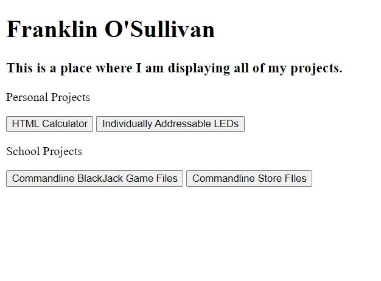

Software

Figure 1: Initial website design
Figure 2: Previous colour theme
The purpose of this project was practice HTML, CSS and JavaScript skills. I wanted to find a way in which I could display my all-rounded skills to people who were interested in seeing them. I found that a website was the best way to do this as people could access it themselves easily from anywhere in the world.
During the development of this site I learned a lot. Initially I did not know how best to present the page. I toyed with many different colour and display styles, before landing on the current model. I then had to find a simple way to host the page, ideally for free as it would incur minimal traffic. Hosting through github was even simpler than I thought it could be and was a great way to incentivise me to active use github for everything. The next hurdle was selecting a method to code the page. I trialled and tested with a few different frameworks, NodeJs and NextJS. Both of these taught me how to use react, though I found that they were a bit difficult and unnessecary. Eventually I decided I would simply use HTML by itself. A few times I have tried to implement react, though I do not see the value in it when I do not require anything difficult that cannot be achieved by HTML.
Future inspiration for this website is continue filling it with projects. Ideally I will be able to move to NextJs at some point in the future. This would also allow for simple database integration, allowing projects to be added much simpler and not just being HTML files filled with text. I also wish for the website to become more interactive and enjoyable to use. Other things I wish to add include expanding images on hover, or at least reacting to it. Project cards looking better and reacting on hover as well.